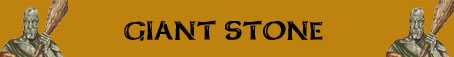

50% presenza di un Cave Bear (link) addestrato
Scagliare Pietre;
Assorbimento Minore del Danno;
Resistenza Moderata alla Roccia;

|
|
Ambiente/Habitat | Zone Montuose |
| Frequenza | Rara | |
| Organizzazione | Solitario o Piccola Tribù | |
| Periodo di Attività | Qualsiasi | |
| Dieta | Omnivores | |
| Intelligenza | Average intelligence (9) | |
| Punti Combattimento | 19 punti combattimento | |
| Tesoro | Vedi sotto | |
| Allineamento Dominante | Lawful Neutral | |
| Numero di Apparizione |
1d10: (1-7)
1
(8-10)
1d2+1 50% presenza di un Cave Bear (link) addestrato |
|
| Classe Armatura | 0 [10 base, 9 corazza, 1 destrezza] | |
| Movimento | 8 esagoni | |
| Dadi Vita | 14 (+14 punti ferita) | |
| Thac0 | 6 | |
| Numero di Attacchi | Clava di Pietra [(oppure Pugno)] | |
| Danni | 2d8+8 (Botta) [(oppure 1d8+8 (Botta)] | |
| Poteri Offensivi | Istinto Predatorio; Scagliare Pietre; |
|
| Poteri Difensivi | Robustezza
Superiore (+14 punti ferita); Assorbimento Minore del Danno; Resistenza Moderata alla Roccia; |
|
| Poteri Generici | Poteri delle Creature Huge; | |
| Vulnerabilità | Nessuna; | |
| Resistenza alla Magia | Nessuna; | |
| Sensi | Oscurovisione | |
| Dimensioni | Huge (5 m. altezza) | |
| Morale | Champion (16) | |
| Valore in Punti Esperienza | 13450 |
|
TIRI SALVEZZA DELLA CREATURA |
|||||||
| CORAGGIO | ENERGIA VITALE | MAGIA | MALATTIA | MENTE | RIFLESSI | ROBUSTEZZA | VELENO |
| 0 | +5 | 0 | 0 | 0 | 0 | 0 | 0 |
| 32 | 30 | 49 | 31 | 47 | 42 | 31 | 23 |
Descrizione
Un enorme umanoide totalmente calvo, alto circa cinque metri e dal peso di circa 1500 kg.. La loro pelle è grigia e ruvida come la roccia mostrando in diverse parti increspature simili a quelle presenti sugli ammassi pietrosi. Il loro viso, dalle fattezze simili a quello scavato nella roccia dagli scultori, appare costantemente arcigno e corrucciato.

Combat
Questi giganti portano enormi clave che usano come arma. Questi giganti attaccano frontalmente i propri avversari utilizzando la loro forza bruta. Quando possono, però, preferiscono combattere su alti e rocciosi strapiombi dai quali possono bombardare gli avversari con rocce e macigni limitando i rischi personali.
ISTINTO PREDATORIO (Moderate Special Ability): La creatura possiede un forte istinto predatorio, per tale motivo costei riceve un bonus costante di +1 alla Thac0 con i suoi attacchi.
SCAGLIARE PIETRE (Superior Special Ability): In luogo di effettuare attacchi in corpo a corpo queste creature possono scagliare massi sui loro avversari. Questi giganti possono scagliare massi alle seguenti distanze: 30 metri (distanza corta), 45 metri (gittata lunga -2 Thac0), 60 metri (gittata lunga -5 Thac0). Si tratta di un attacco ad un singolo bersaglio che richiede regolare tiro per colpire. Se il tiro per colpire ha successo la vittima subisce 3d6+2 danni da botta. Solitamente ogni gigante porta nella sua borsa 2d4+2 rocce da poter scagliare contro gli avversari in caso di pericolo. Ogni round se si trova in zona rocciosa o montuosa può recuperare un valido macigno con un'azione complessa (assimilabile a recuperare un'arma caduta) avente il 33% di successo, la prova può essere ripetuta ogni round di combattimento.
ROBUSTEZZA SUPERIORE (Typical Ability): Il fisico di questa creatura è estremamente robusto conferendole una robustezza superiore che le garantisce 14 punti ferita supplementari.
ASSORBIMENTO MINORE DEL DANNO (Typical Ability): Il corpo della creatura è così compatto che la stessa riduce di - 2 danni ogni singolo attacco fisico (botta,taglio,punta) subito (indipendentemente dai dadi di danno tirati con l'attacco), questo beneficio non si estende ai danni diversi da quelli fisici (come fuoco e come i danni di molte magie i cui effetti non possono essere ricondotti a quelli di danni fisici).
RESISTENZA MODERATA ALLA ROCCIA (Typical Ability): Il corpo della creatura è particolarmente resistente ai danni, sia magici che naturali, prodotti tramite la roccia o la pietra (indipendente dalla tipologia di danno prodotto), per tale motivo la stessa ridurrà del 33% (per eccesso) tutti i danni prodotti utilizzando roccia, pietra o terra. Inoltre la creatura riceverà un bonus di +2 a tutti i tiri salvezza contro effetti prodotti utilizzando roccia, pietra o terra. Si noti che la creatura non ottiene alcun beneficio contro i minerali ed i metalli.
POTERI DELLE CREATURE HUGE : In quanto creatura di dimensione Huge questa creatura ottiene i seguenti benefici (link).
Habitat/Society
I giganti delle montagne sono creature semplici ma non selvagge. Questi giganti vivono in tribù che dimorano in cave rocciose spesso scavate ed ampliate artificialmente da queste stesse creature. Un insediamento di giganti della pietra è costituito solitamente da alcune zone funzionali alle loro attività comuni: la stalla recintata per gli animali allevati, il magazzino per le materie prime (principalmente legname), la riserva alimentare, una sala da lavoro contenente le attrezzature per la manifattura e la caccia, una sala comune chiamata la "Grande Caverna" solitamente decorata con affreschi murali e posizionata in zona centrale dove i giganti si riuniscono per magiare e per i rapporti conviviali e per svolgere le cerimonie, le sale private più interne e la più protetta sala del tesoro dove sono custoditi i beni preziosi comuni e quelli individuali di più importante valore. L'ingresso alle caverne è tipicamente protetto da un alto muro ed una torre di guardia (in legno od in pietra). Si tratta di una piattaforma rialzata capace di ospitare almeno tre giganti, sulla quale si trova sempre una sentinella per avvistare eventuali nemici. In caso di pericolo dalla torre di guardia i giganti possono scagliare massi (ivi appositamente accatastati) contro i loro nemici.
Ecology
I giganti della pietra hanno un lungo ciclo vitale che si aggira intorno agli 800 anni (con un età massima di 1000 anni). I membri della tribù che raggiungono i 500 anni di età sono considerati gli "Anziani" e sono i più rispettati ed ascoltati. Fino a 100 anni, invece, questi giganti sono considerati adolescenti. Questi giganti sono soliti procedere ad una sorta di mummificazione dei cadaveri dei loro morti che poi tumulano in grotte isolate chiuse da grosse lastre di pietra. I più importanti di questi luoghi cimiteriali (che in alcuni casi sono comuni a varie tribù) sono guardati solitamente da uno sciamano oppure da un gigante in esilio al quale è affidato il compito di custodire gli antenati. Per quanto attiene alla religione i giganti della pietra solitamente adorano le Forze della Natura. I giganti della pietra solo soliti allevare come animali da guardia e da compagnia gli Orsi delle Caverne (link).
Mystical Resource Sourge
(Ossa) Quantità:
1, Presenza 33% - Scuola di Magia:
Abjuration
- Qualità della Risorsa: Common.
Mystical Resource Sourge
(Sangue) Quantità: 1, Presenza
33% - Scuola di Magia:
Evocation, Earth
- Qualità della Risorsa:
Common.
Mystical Resource Sourge
(Cuore) Quantità: 1, Presenza 50% - Effetto Particolare:
Resistenza e Vigore Fisico
- Qualità della Risorsa:
Uncommon.
Tesoro
Per determinare il tesoro individuale posseduto da ogni gigante utilizzare la seguente tabella:
| Tipologia di Tesoro | % di Ritrovamento | Quantità |
| Gemme |
20% |
1d10 gemme |
| Oggetti Preziosi | 20% | 1d12: (1-6) 1 oggetto (7-9) 2 oggetti (10-12) 3 oggetti |
| Oggetti Comuni | 50% | 1d6 oggetti comuni |
| Armi | 30% | 1d2 armi |
| Armature | 20% | 1 corazza |
| Oggetto Magico | 15% | 1 oggetto magico 1d10: (1-7) common (8-10) rare |
| Monete di platino | 25% | 3d20 + 3d10 monete di platino |
| Monete d'oro | 33% | 3d100*2 + 5d20 monete d'oro |
| Monete d'argento | 33% | 3d20*12 + 3d20 monete d'argento |
| Monete di rame | 33% | 3d20*25+3d10 monete di rame |